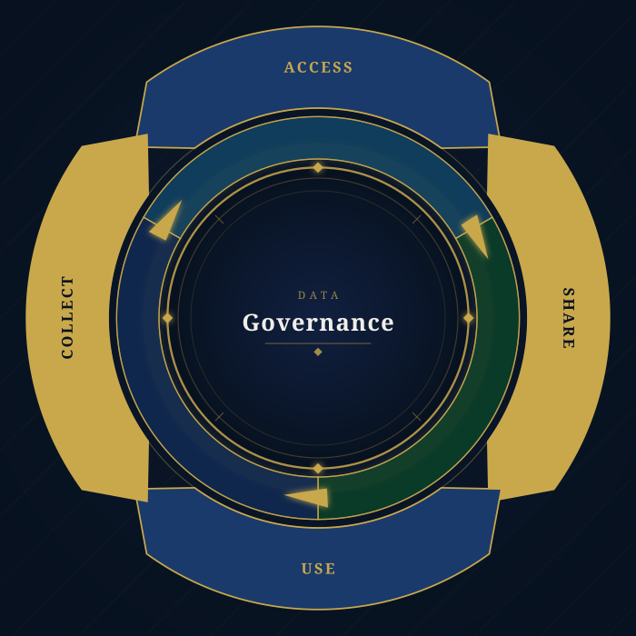

DAMA International — the Data Management Association — is the global professional organisation dedicated to advancing the concepts and practices of information and data management. Founded in 1988, DAMA provides practitioners, leaders, and organisations with the standards, frameworks, and community needed to govern data as a strategic enterprise asset.
At the heart of DAMA's contribution is the DAMA-DMBOK (Data Management Body of Knowledge) — a globally recognised framework that defines eleven interconnected knowledge areas, with Data Governance at its centre. These areas span the full data lifecycle: from architecture and modelling to quality, security, warehousing, and metadata management.
The DMBOK framework provides organisations with a common vocabulary and structured approach to managing data across people, processes, and technology — enabling accountability, compliance, and competitive advantage at every level.
The systems and tools that enable data to be captured, stored, and activated with precision.
The stewards, owners, and custodians who define accountability across the data lifecycle.
The policies and workflows that ensure data is governed consistently, reliably, and with integrity.